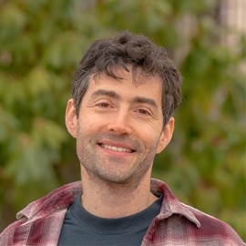
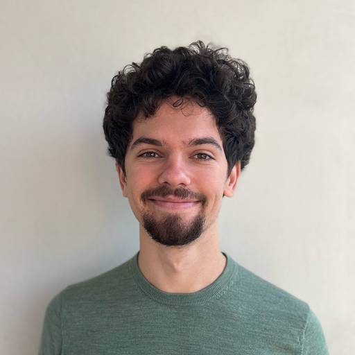

Discourse Graphs
Discourse Graphs are deployed across over a dozen research labs, with hundreds of researchers using them weekly in their lab notebooks and making over 12,000 structured contributions in the past year.
Modular Open Science, AI & Collective Intelligence
MOSAIC is an R&D program to build a new medium for networked research. MOSAIC integrates modular research tools, open social networks, and AI to solve crucial coordination bottlenecks, democratize science and radically accelerate breakthroughs.
Developed through the Big if True Science (BiTS) accelerator at Renaissance Philanthropy
AI is making individual scientists dramatically more productive. But the coordination system that turns individual work into collective knowledge — how we share, evaluate, and build on each other's research — has barely evolved at all. As a result, science has no way to metabolize individual productivity into collective progress, and increasingly no way to tell progress from plausible noise.
The internet revolutionized how knowledge is created and shared. Today's AI is only possible due to the vast repositories of human knowledge it made openly readable. Social media demonstrates the vast potential of real-time global-scale discourse. But science has barely moved: the paper is still the only recognized unit of science and has not meaningfully changed in centuries. Papers bear the full load of the scientific process — disseminating results, communicating ideas, evaluating quality, assigning credit — but they are ill-suited for the speed, scale and complexity of today's challenges.
In 2011, Michael Nielsen's Reinventing Discovery: The New Era of Networked Science introduced the idea of networked science. He argued that the internet and open online collaboration could democratize and accelerate science by applying the coordination patterns behind successful large scale projects like Wikipedia and Linux: composable and modular micro-contributions, low contribution barriers, networked in the open, at enormous scale. Despite some initial encouraging examples like preprint servers and citizen science projects, Nielsen's own assessment was that we had fallen far short of the potential for networked science. It still holds.
The idea wasn't wrong. But the right substrate didn't exist.
MOSAIC (Modular Open Science, AI & Collective Intelligence) is an R&D program to realize the vision of networked science. MOSAIC was incubated at Renaissance Philanthropy's Big if True Science accelerator (BiTS), a fellowship for scientists and technologists to design ambitious R&D programs.
Our Big if True hypothesis is that an intentionally designed networked research medium will enable humans and agents to solve crucial coordination challenges and radically accelerate breakthroughs.
Three mutually reinforcing developments are converging to create a unique opportunity to implement the networked coordination patterns identified by Nielsen:
1) Modular research tools (such as Discourse Graphs and Nanopublications) are making it possible to represent the actual process of research (hypotheses, questions, critiques, evidence, etc) as reusable, machine-readable units rather than burying them inside monolithic papers. Early Discourse Graph deployments are showing promising evidence that these tools help researchers think and collaborate better.
"Even in the limited time I've used Discourse Graphs, I've found huge improvements in my thinking and doing of science." — Pilot user
(2) Protocol-based social networks such as AT Protocol (powering the Bluesky platform) are a credible alternative to closed platforms, and large science communities have already moved there. Scientific micro-contributions already happen on social media — discussion, data sharing, and meaningful real-time evaluation of research. However, we lack the means to recognize these contributions as such: data is locked in closed platforms, and rich social media discourse is flattened into "research mentions". Protocols are what make the difference, as they enable not just rebuilding Science Twitter, but shaping whole new apps and services for research, on decentralized infrastructure that is resilient to capture. The AT Protocol science ecosystem, described below, has grown to more than 30 interoperating apps spanning the research lifecycle.
"The properties that make AT Protocol compelling for social networking are the same properties the research community has been asking for" — Scientific Documents as First-Class Objects on AT Protocol
3) AI that can contribute. AI progress makes networked science even more relevant. AI systems can now work across the full research lifecycle but lack the scaffolding to do it traceably and verifiably. Social networks provide essential human trust, curation and interaction. Modular research provides the right interface for agentic science and high fidelity data in the form of structured reasoning traces. Papers fail models as both inputs and outputs: neither machine-readable nor faithful records of how research happens, so AI trained on them inherits a distorted picture of science; and cheap enough for agents to generate that review has nothing smaller or more verifiable to anchor against.
Networked research, which thrives on openness and large-scale collaborative ecosystems, has also long been blocked by an infrastructure funding gap. Academia and small non-profits lack the engineering capacity to build it. Startups need near-term returns and, like the incumbent platforms, depend on moats and data enclosure. Catalytic philanthropy, such as deployed by Renaissance Philanthropy, is the unlock: it can fund at the scale infrastructure requires, tolerate long time horizons that the market cannot, and build a field rather than just products.
Between us, we've spent over a decade building the products, ecosystems, and networks that MOSAIC is rooted in.
Discourse Graphs are deployed across over a dozen research labs, with hundreds of researchers using them weekly in their lab notebooks and making over 12,000 structured contributions in the past year.
We co-founded Cosmik as an R&D lab for collective sensemaking tools. Comsik is building a curation network for researchers called Semble. Semble already has more than a thousand users and an active integration with Discourse Graphs, providing early evidence for social apps as a strong adoption driver for networked research.
We co-founded MIRA in 2026 as a broad coalition driving implementation and adoption of modular research tools and practices like Discourse Graphs. MIRA includes researchers, developers, funders and field builders from more than a dozen organizations.
We co-founded ATScience in 2025 to steward the ecosystem of research tools and infrastructure on AT Protocol. ATScience has since grown to more than 20 independent apps spanning the research lifecycle — annotation, publishing, communication, review, data, and AI. All of them natively interoperate by virtue of sharing the same underlying protocol.
These are the seeds. MOSAIC's mission is weaving them into a coherent “networked research stack” and getting them to critical mass through funding and deliberate field building.
The three focus areas of the MOSAIC program are modular research, AI, and open social protocols. The program is organized into two efforts:
is a focused team running the program, building the shared stack and integrations, and leading adoption efforts with pilot communities.
is a thesis driven fund backing projects across the three program areas.
MOSAIC is also partnering with Catalyze, a funding platform for research, to connect contribution data directly to research funding. Funders will be able to make informed allocation decisions based on real time data from the MOSAIC network. Part of the MOSAIC pool will be used to match contributions made through Catalyze, effectively turning community expertise into allocation signals.
To historians looking back a hundred years from now, there will be two eras of science: pre-network science, and networked science.
There is a direct path connecting Nielsen's networked science with the growing sense that the next scientific revolutions will not be achieved only by funding elite labs or startups, but by rearchitecting science and by engineering new forms of human coordination. Coordination failure was the single most common theme named across nearly two hundred essays in a meta-science competition hosted recently by the Astera Institute: "the absence of any mechanism for doing collectively what no individual lab or team can do alone."
We have long had the vision and theory for networked science, but lacked the means to implement it. Maturing networks and technological capabilities and new funding models open a unique window of opportunity. MOSAIC is a program to catalyze the networked science revolution at a time when it has never been more needed.

Ronen is a collective intelligence researcher and entrepreneur. He completed an Open Science fellowship at the Astera Institute, and is a co-founder of multiple metascience startups and initiatives, including Cosmik and ATProto Science. Ronen's work is supported by Astera and Coefficient Giving. Ronen also holds a PhD in AI from the Hebrew University of Jerusalem.

Francisco is a collective intelligence researcher and tools-for-thought builder. He has worked at METR and the EU AI Office, and founded the Twitter Community Archive, an open data commons for a distributed community of independent researchers. Francisco's work is supported by Vitalik Buterin and the Survival and Flourishing Fund.
Interested in MOSAIC? Want to partner with us or support the program? We'd love to hear from you.
Get in touch